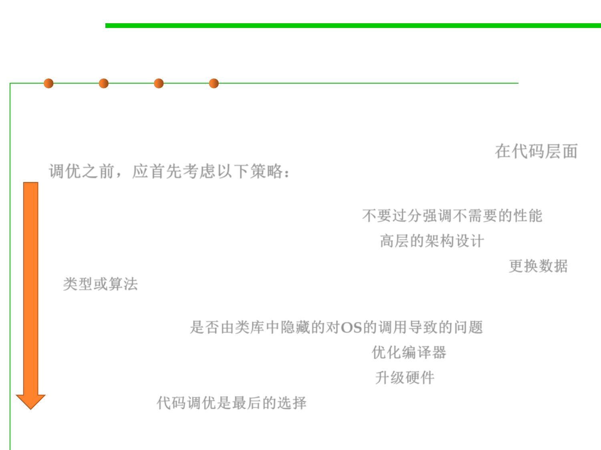

8.3 Code Tuning for Performance Optimization
Consider these options first before tuning
▪ Once you’ve chosen efficiency as a priority, whether its emphasis is
on speed or on size, you should consider several options before
choosing to improve either speed or size at the code level. 在代码层面
调优之前，应首先考虑以下策略：
– Program requirements: Asking for more than is needed leads to trouble (e.g.,
return 1ms, is it always? On average? 99%?) 不要过分强调不需要的性能
– System design: High-level architecture design 高层的架构设计
– Class and function design: data types and algorithm performance 更换数据
类型或算法
– Operating-system interactions: Hidden OS calls within libraries which are
maybe slow or fat 是否由类库中隐藏的对OS的调用导致的问题
– Code compilation: “Automatic” optimization 优化编译器
– Hardware: update HW would be much easier 升级硬件
– Code tuning 代码调优是最后的选择